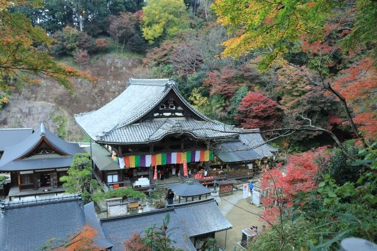
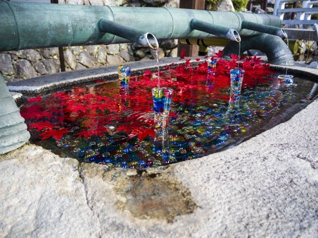

歴史ある本堂
山腹に建つ本堂は岡寺を代表する景観で、多くの参拝者が訪れる人気スポットです。

岡寺は、日本最初の厄除け霊場として知られる真言宗豊山派の古刹です。 正式名称は龍蓋寺（りゅうがいじ）で、西国三十三所第七番札所としても多くの参拝者が訪れます。 春のシャクナゲや初夏の紫陽花、秋の紅葉など四季折々の花も美しく、明日香村を代表する人気スポットです。
| 拝観時間 | 8:30～17:00 |
|---|---|
| 定休日 | 年中無休 |
| 拝観料 |
一般 500円 高校生 400円 中学生以下 無料 |
| 所要時間 | 約40～60分 |
| 駐車場 |
岡寺無料駐車場
（徒歩約1分・無料）
岡寺門前駐車場 （徒歩約3分・有料） |
| アクセス |
近鉄飛鳥駅から奈良交通バス「岡寺前」下車、徒歩約10分。 境内までは坂道と石段がありますので歩きやすい靴がおすすめです。 |
| 地図 | 地図はこちら |

山腹に建つ本堂は岡寺を代表する景観で、多くの参拝者が訪れる人気スポットです。

春のシャクナゲ、初夏の紫陽花、秋の紅葉など、一年を通して美しい景色が楽しめます。
岡寺は7世紀、義淵僧正によって創建されたと伝わる古刹です。 正式名称は龍蓋寺で、義淵僧正が悪龍を池に封じ込めたという伝説から寺名が付けられました。 日本最初の厄除け霊場として古くから信仰を集め、西国三十三所観音霊場第七番札所として現在も多くの参拝者が訪れています。